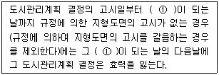
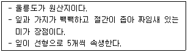
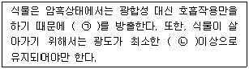
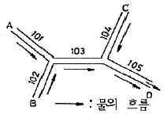
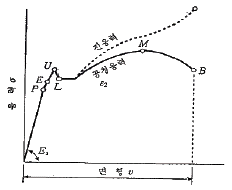
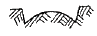
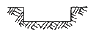
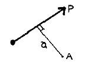

조경산업기사 (2010-03-07 기출문제)
1과목: 조경계획 및 설계
1. 고대 그리스의 공공 조경에서 아고라(Agora)가 가리키는 것은?
- 광장(廣場)
- 성지(聖地)
- 유원지(遊園地)
- 농경지(農耕地)
(정답률: 92%)

2. 1988년 서울올림픽을 위한 도시개선 및 장식적인 준비운동과 조경사적인 관점에서 가장 비슷한 것으로 볼 수 있는 것은?
- 18세기 영국의 커뮤니티 운동
- 19세기 미국의 도시공원 운동
- 19세기 영국의 소정원 운동
- 20세기 미국의 도시미화 운동
(정답률: 78%)
3. 가정용 정원에 연못을 만들 때 설계기준으로 가장 부적합한 것은?
- 연못의 수면은 지표에서 6~10cm 정도 낮게 한다.
- 연못의 수심은 약 60cm 정도가 적당하다.
- 연못의 면적은 정원 전체 면적의 1/3 이상으로 확보되어야 좋다.
- 붕어를 기를 연못은 바닥보다 1m 정도 낮게 웅덩이를 파거나 항아리를 묻어준다.
(정답률: 83%)
4. 옥외휴양지의 계획에 있어서 기상 조건을 조사할 때 인간의 생활행동의 지배인자로서 중요도가 가장 낮은 것은?
- 기온의 변동량(치고, 최저 기온 등)
- 강우시간이나 폭풍일수
- 월평균 기온이나 월강우량의 평년치
- 생물기후의 각종 데이터(data)
(정답률: 60%)
5. 고려시대에 조성된 정원과 관련이 없는 것은?
- 화원(花園)
- 격구장(擊毬場)
- 동지(東池)
- 안학궁(安鶴宮)
(정답률: 70%)
6. 추상파의 선구자로서 음악의 인상을 선과 색으로 표현하였으며, 자유로운 유동성의 화면을 구성한 대표적인 20세기 예술가는 누구인가?
- 피카소
- 칸딘스키
- 마네
- 마티스
(정답률: 72%)
7. 골프장 설계와 관련된 설명 중 부적합한 것은?
- 남~북방향으로 긴 부지가 적합하다.
- 평지지형이 적합하다.
- 산림, 연못, 하천 등의 자연지형을 되도록 이용할 수 있는 곳이 적합하다.
- 정방형보다는 구형에 가까운 용지가 적합하다.
(정답률: 72%)
8. 조경가를 세분된 분야로 구분할 때 주로 대규모 프로젝트에 관여하며 종합적 사고력(합리성)을 필요로 하는 제너럴리스트(generalist)의 입장을 취하는 분야는?
- 조경계획가
- 조경설계가
- 조경기술자
- 조경원예가
(정답률: 81%)
9. 전국 임지(林地)에 적지적수(適地適樹) 조림을 위하여 제작된 간이 산림토양토(山林土壤圖)의 축척으로 가장 적합한 것은?
- 1:10000
- 1:25000
- 1:50000
- 1:100000
(정답률: 81%)
10. 조경계획과 설계의 작업순서를 배열할 것 중 옳은 것은?
- 계획목표수립→예비조사→분석→기본구상의 책정→기본계획→설계도 작성→시공
- 계획목표수립→예비조사→기본구상의 책정→분석→기본계획→설계도 작성→시공
- 계획목표수립→분석→기본구상의 책정→예비조사→기본계획→설계도 작성→시공
- 계획목표수립→분석→기본구상의 책정→기본계획→예비조사→설계도 작성→시공
(정답률: 74%)
11. 미기후 현상 중 안개나 서리는 주로 어느 지역에서 발생하는가?
- 경사가 급하고 수목이 밀생한 지역
- 지하수위가 높고 사질양토인 지역
- 홍수범람이 일어나는 지역
- 지형이 낮고 배수가 불량한 지역
(정답률: 77%)
12. 중국의 백낙천(白樂天)과 관련이 있는 것은?
- 백련(白蓮), 학(鶴), 천축석(天竺石)
- 무산십이봉(巫山十二峰), 동정호(洞庭湖), 유배정(流配亭)
- 울밑의 국화(東籬菊), 오류선생(五柳先生), 무릉도원(武陵桃源)
- 염계(廉溪), 애련설(愛蓮說), 광풍제월(光風霽月)
(정답률: 70%)
13. 네덜란드의 르네상스 정원에 관한 설명으로 거리가 먼 것은?
- 프랑스. 르노트르 양식의 영향을 받아 평면기하학식 정원이 잘 발달하였다.
- 지형학상 구릉지가 없어서 노단식 정원을 찾아 볼 수 없었다.
- 화훼류를 애호하는 국민성으로 인해 초본식물로 위주로 한 정원이 발달하였다.
- 네덜란드인이 창안해 낸 정원 구조물로서는 창살울타리가 유명하다.
(정답률: 65%)
14. 다음 중 일점쇄선으로 표시해야 하는 것은?
- 지시선
- 중심선
- 치수선
- 파단선
(정답률: 74%)
15. 조선시대 다산 초당정원(茶山草堂園林)과 관계가 가장 먼 것은?
- 단상(段狀)의 화계
- 방지원도(方池圓島)
- 석가산
- 풍수지리설
(정답률: 65%)
16. 선의 심리적 느낌에 관한 설명으로 옳지 않은 것은?
- 가는 지그재그 선은 신경질적이고 불안정하다.
- 와선은 복잡하지만 장려하고 역동적인 느낌을 준다.
- 굵은 직선은 확실하고 남성적인 느낌을 준다.
- C-커브 곡선은 정적이며 비매력적이다.
(정답률: 83%)
17. 주차장법 시행규칙에서 정한 노상주차장의 구조 및 설비기준이 아닌 것은? (단, 예외 조항에 대한 것은 제외한다.)
- 너비 8미터 미만의 도로에 설치하여서는 아니 된다.
- 종단 경사도가 4퍼센트를 초과하는 도로에 설치하여서는 아니 된다.
- 주차대수규모가 20대 이상인 경우에는 장애인전용주차 구획을 1면 이상 설치하여야 한다.
- 고속도로·자동차전용도로 또는 고가도로에 설치하여서는 아니 된다.
(정답률: 55%)
18. 동일한 녹색을 가지고 흰 종이 위에 가는 녹색선과 넓은 녹색면을 만들었다면, 녹색선이 녹색면 보다 더 어둡게 느껴지는데 이러한 현상을 무엇이라 하는가?
- 명도대비
- 색상대비
- 면적대비
- 연변대비
(정답률: 78%)
19. 국토의 계획 및 이용에 관한 법률상 도시관리계획 결정의 실효에 관한 사항이다. ( ① ) 안에 알맞은 것은?

- 6월
- 1년
- 2년
- 3년
(정답률: 58%)
20. 전통적인 일본식 정원의 형태가 아닌 것은?
- 회유임천식
- 평전고산수식
- 다정
- 사실주의풍경식
(정답률: 83%)
2과목: 조경식재
21. 다음 중 수목생육에 가장 나쁜 영향을 미치는 것은?
- 탄화수소
- 질소화합물
- 일산화탄소
- 아황산가스
(정답률: 80%)
22. 한지형(寒地型) 서양잔디의 생육 적온으로 가장 알맞은 것은?
- -2~5℃
- 5~8℃
- 10~12℃
- 15~24℃
(정답률: 65%)
23. 다음 설명하는 특징을 가진 수종은?

- Pinus parviflora
- Pinus bungeana
- Pinus strobus
- Pinus densiflora
(정답률: 56%)
24. 다음 수목 중 적갈색 수피를 가지고 있는 것은?
- Celtis sinensis
- Betula platyphylla
- Chamaecyparis obtusa
- Platanus occidentalis
(정답률: 41%)
25. 운향과로 3출 복엽이고, 가을의 노란색 열매가 진한 향기가 나며, 녹색 줄기의 가시가 발달하여 경계·차폐식재에 이용되는 수종은?
- 탱자나무
- 산초나무
- 굴거리나무
- 참죽나무
(정답률: 71%)
26. 다음 각각의 ( )에 적합한 용어는?

- ㉠ : O2, ㉡ : 광포화점
- ㉠ : O2, ㉡ : 광보상점
- ㉠ : CO2, ㉡ : 광보상점
- ㉠ : CO2, ㉡ : 광포화점
(정답률: 75%)
27. 대기오염에 의한 수목의 피해증상이 아닌 것은?
- 상록수는 잎의 수가 적어진다.
- 낙엽수는 단풍기와 낙엽기가 늦어진다.
- 잎면이 우둘두둘해지는 경우가 있다.
- 나무 잎에 갈색의 반점이 생기는 경우가 있다.
(정답률: 72%)
28. 3그루 심기에 있어서 가장 자연스러운 수목의 배치는?
- 같은 수종을 1줄로 보이도록 배식한다.
- 식재위치를 연결할 때 부등변 삼각형이 되도록 배식한다.
- 중심에 주목(主木)을 식재하고 그 양편에 한그루씩 식재하도록 한다.
- 서로 다른 수종을 수고(樹高)간격만큼 띠어서 나란히 식재토록 한다.
(정답률: 76%)
29. 광물질을 고온처리한 후 분쇄하여 다공질로 만든 토양개량제로서, 펄라이트, 버미큘라이트, 제올라이트, 벤토나이트, 석회 등이 포함되는 토양개량제를 가리키는 것은?
- 유기질계 토양개량제
- 무기질계 토양개량제
- 고분자계 토양개량제
- 미생물계 토양개량제
(정답률: 77%)
30. 다음 중 양수(陽樹)에 해당하는 수종은?
- 비자나무
- 사철나무
- 자작나무
- 굴거리나무
(정답률: 71%)
31. 다음 중 낙엽 활엽교목으로 잎이 가늘고 작아 부드러운 질감(Texture)의 느낌을 주는 수종은?
- 위성류
- 네군도단풍
- 붉나무
- 팥배나무
(정답률: 67%)
32. 모과나무는 정원에 즐겨 심어지는 화목류이고 열매 나무이다. 다음 중 모과나무를 가리키는 학명은?
- Rosa davurica
- Chaenomeles lagenaria
- Chaenomeles japonica
- Chaenomeles sinensis
(정답률: 52%)
33. 다음 중 식생, 환경요인 등 생태학적 사고방식을 도입한 식재수법은?
- 정형식재
- 교호식재
- 군락식재
- 자유식재
(정답률: 60%)
34. 뿌리 감기 굴취법과 관련이 없거나 틀린 것은?
- 굴취 하기 전 하지(下枝)를 위로 올려 새끼나 마대 끈으로 가지를 묶어 준다.
- 뿌리부위의 토양상태를 파악하고 뿌리가 노출될 때까지 표토를 긁어낸다.
- 마지막까지 캐낸 근주에 새끼나 짚을 감지 않고 분흙이 떨어지거나 깨지더라도, 이식에 강한 수종에 알맞은 방식이다.
- 토양이 모래 또는 자갈로 구성되어 있을 때는 굴취를 포기하거나 마대로 분 주변을 싸고 새끼나 마대끈으로 묶는다.
(정답률: 68%)
35. 다음 중 4~5월에 개화하는 수목만으로만 구성된 것은?
- 배릉나무, 자귀나무
- 수수꽃다리, 으름덩굴
- 노각나무, 부용
- 목서, 팔손이나무
(정답률: 64%)
36. 다음 중 녹음수로서 그 기능이 매우 우수한 수종으로만 짝지워진 것은?
- 해송, 소나무
- 비자나무, 미루나무
- 느티나무, 팽나무
- 백당나무, 불두화
(정답률: 79%)
37. 실내의 건축적 구조가 벽이 높고 천정이 높아 아늑함을 느끼지 못하고 위화감을 유발하게 되므로 벽면에 기복과 파동을 주어 안정된 분위기를 연출하는 기법은?
- 섬(Island)기법
- 캐스케이드기법
- 화단기법
- 겹치기기법
(정답률: 70%)
38. 다음 식재방법으로 잘못된 것은?
- 정식할 때 화학비료를 함께 넣고 심는다.
- 식재 구덩이에 완숙퇴비를 넣는다.
- 식재 구덩이에 토양개량토를 넣는다.
- 물조임 할 때에는 물이 완전히 스며든 다음에 복토를 한다.
(정답률: 65%)
39. 다음은 수목의 가식장을 선정할 때 고려해야 할 사항이다. 이 중 적합하지 않은 것은?
- 수목의 반입과 반출이 용이한 곳이어야 한다.
- 방풍이 잘되는 곳이어야 한다.
- 가급적 그늘진 곳이 좋다.
- 아주 습한 곳이 좋다.
(정답률: 81%)
40. 조경 식물의 명명법(命名法) 규칙에 어긋나는 것은?
- 학명은 속명에 종명이 연결된 이명식(二名式)이어야 한다.
- 서로 다른 두 식물군이 통합되었을 때는 더 오래 된 군의 학명이 통합된 군의 이름으로 보유된다.
- 학명의 구성 중 속명(屬名)은 소문자로 시작되고, 종명(種名)은 대문자로 시작된다.
- 각 식물은 홀로 한 개의 정확한 학명을 가질 수 있다.
(정답률: 72%)
3과목: 조경시공
41. 다음 그림에서 배수관 입구 A, B, C에서의 유입시간이 7분, 101번 배수관에서 1⑤번 까지 각각의 배수관 길이가 60m 씩이고, 배수관 내에서 유속을 1m/sec로 보았을 때 A점에서 D점까지의 유달시간으로 가장 적합한 것은?

- 8분
- 10분
- 12분
- 37분
(정답률: 48%)
42. 목제에서 각 성분의 상승효과, 처리재의 흡수성, 방연성, 금속부식성, 결정의 석출, 목질의 열화, 강도저하의 개량을 꾀하는 혼합방화제(混合防火劑)가 아닌 것은?
- 폴리인산암모늄
- Minalith
- Pyresite
- 크롬화염화아연
(정답률: 50%)
43. 아래 연강의 응력-변형률 곡선에 대한 설명으로 옳지 않은 것은?

- P는 비례한도이다.
- E는 탄성한도이다.
- L은 하양복점이다.
- U는 중간항복점이다.
(정답률: 52%)
44. 도로 곡선부의 단면을 나타낸 그림 중 편구배(片句配)를 나타낸 것은?


(정답률: 77%)
45. 내열성이 크고 발수성을 나타내어 방수제로 쓰이며, 저온에서도 탄성이 있어 gasket, packing 의 원료로 쓰이는 합성수지는?
- 페놀수지
- 실리콘수지
- 에폭시수지
- 폴리에스테르수지
(정답률: 73%)
46. 발주자가 입찰자로 하여금 입착내역서상 동 입찰금액을 구성하는 공사 중 하도급 할 공종, 하도급금액, 하수급 예정자 등 하도급에 관한 사항을 기재하여 입찰서와 함께 제출하도록 하는 제도는?
- 사진자격심사(P.Q)
- 내역입찰
- 대안입찰
- 부대입찰
(정답률: 50%)
47. 그림은 모멘트(Moment)에 관한 표시이다. 그림에 대한 설명 중 틀린 것은?

- 모멘트란 힘 P의 A점에 대한 회전능률을 말한다.
- 모멘트는 힘 P의 크기에 비례한다.
- 모멘트는 힘 P에 거리 a를 곱한 값이다.
- 모멘트는 거리 a에 반비례한다.
(정답률: 73%)
48. 1:1000의 축척인 지형도에서 1cm2의 면적은 실제로 몇 m2인가?
- 10
- 100
- 1000
- 1000000
(정답률: 55%)
49. 흙의 함수비에 관한 설명으로 부적합한 것은?
- 점토지반에서 함수비가 크면 점착력이 증가한다.
- 점토지반에서 함수비의 감소로 전단강도가 증가된다.
- 모래지반에서 함수비가 크면 내부마찰력이 감소된다.
- 함수비를 감소시키기 위해서는 sand drain 공법을 사용할 수 있다.
(정답률: 48%)
50. 다음 배수(排水)체계에 대한 설명 중 틀린 것은?
- 직각식(直角式)은 신속하게 하수를 배출시키나 구축비(構築費)가 많이 든다.
- 차집식(遮集式)은 오수를 처리하여 하류에 보냄으로 수질오염이 최소화 된다.
- 방사식(放射式)은 배관의 최대 연장이 짧고, 소관경(小管經)으로 시설할 수 있다.
- 평행식은 고지구(高地區), 저지구(低地區)를 구분해서 배관할 수 있다.
(정답률: 56%)
51. 골재의 함수상태에 관한 설명으로 틀린 것은?
- 절대건조상태 : 대기중에서 골재의 표면이 완전히 건조된 상태
- 습윤상태 : 골재입자의 내부에 물이 채워져 있고, 표면에도 물이 부착되어 있는 상태
- 표면전조포화상태 : 골재입자의 표면에 물은 없으나 내부의 공극에는 물이 꽉 차 있는 상태
- 공기중건조상태 : 실내에 방치한 경우 골재입자의 표면과 내부의 일부가 건조한 상태
(정답률: 60%)
52. 합성고무 또는 합성수지를 주성분으로 하는 두께 1mm 정도의 합성고분자 루핑을 접착재로 바탕에 붙여서 방수층을 형성하는 공법은?
- 시트(sheet)방수
- 도막방수
- 아스팔트방수
- 표면도포방수
(정답률: 66%)
53. 다음 콘크리트 워커빌리티(Workability)에 대한 설명으로 틀린 것은?
- 시멘트의 종류, 분말도, 사용량이 영향을 미친다.
- 잔골재율이 지나치게 작으면 워커빌리티가 나빠진다.
- 골재의 입자가 모난 것이나 납작한 것은 워커빌리티를 개선한다.
- 시공연도를 나타내는 것이다.
(정답률: 69%)
54. 공사용 재료의 경사면 소운반 거리 산정시 수직높이 3m는 수평거리 얼마에 해당하는가? (단, 건설공사표준품셈을 기준으로 한다.)
- 15m
- 18m
- 21m
- 24m
(정답률: 73%)
55. 공사계약서에 포함되어야 하는 내용으로 부적합한 것은?
- 공사금액
- 시방서 작성방법
- 분쟁의 해결방법
- 설계변경절차 및 기성금액 지불방법
(정답률: 62%)
56. 시멘트의 저장방법으로 적합하지 않은 것은?
- 쌓기 단수는 13포 이하로 보관한다.
- 습기를 방지하고 통풍이 잘 되도록 조치하여 곰팡이를 제거한다.
- 지상에서 30cm 이상 떨어지도록 마루판을 설치한 후 적재한다.
- 입하(入荷) 순서대로 사용한다.
(정답률: 62%)
57. 다음 중 알루미늄에 대한 설명으로 옳지 않은 것은?
- 반사율이 극히 크므로 열 차단재로 쓰인다.
- 알칼리에 침식되지 않아 콘크리트에 접하여 사용할 수 있다.
- 내화성이 적고 산에 침식되기 쉽다.
- 압연, 인발 등의 가공성이 좋다.
(정답률: 57%)
58. 1회 측정할 때마다 ±3mm의 우연오차가 생겼다면 5회 측정할 때 생기는 오차의 크기는?
- ±6.7mm
- ±9.3mm
- ±12.0mm
- ±15.0mm
(정답률: 44%)
59. 어느 목재의 함수율은 25%이다. 건조 전 100g인 이 목재의 절대건조중량은 얼마인가?
- 20g
- 40g
- 60g
- 80g
(정답률: 59%)
60. 포틀랜드시멘트의 화학성분 중 가장 많은 부분을 차지하는 성분은?
- 실리카(SiO2)
- 산화철(Fe2O3)
- 알루미나(Al2O3)
- 석회(CaO)
(정답률: 74%)
4과목: 조경관리
61. 식물의 관수량을 결정하는 요소와 가장 관계가 적은 것은?
- 토양의 포장요수량(圃場要水量)
- 토양의 침투율(浸透率)
- 토양의 위조함수량(萎凋含水量)
- 토양의 유효수분함량(有效水分含量)
(정답률: 47%)
62. 다음 중 수목병과 중간기주가 틀리게 연결된 것은?
- 잣나무 털녹병-송이풀
- 소나무 혹병-졸참나무
- 전나무 잎녹병-뱀고사리
- 소나무 잎녹병-계요등
(정답률: 52%)
63. 일반 공공시설 또는 공원관리에 있어서 주민참가의 조건으로 적합하지 않은 것은?
- 규모 및 전문성이 주민의 수용능력을 넘지 않아야 한다.
- 주민참여에 의해 효과가 기대되어야 한다.
- 운영상 주민의 자발적 참여 및 협력은 필요요건은 아니다.
- 주민참여에 있어서 이해의 조정과 공평심(公平心)을 가져야 한다.
(정답률: 78%)
64. 수목의 탄저병에 관한 설명으로 틀린 것은?
- 오동나무 탄저병은 주로 어린 실생묘에서 발생한다.
- 버즘나무 탄저병은 주로 장마철에 발생한다.
- 동백나무 탄저병은 잎은 무론 과실에도 발생한다.
- 사철나무 탄저병은 조기낙엽의 원인이 된다.
(정답률: 46%)
65. 다음 중 도시공원의 식물관리비 계산식으로 가장 적합한 것은?
- 수목의 단가×작업율×작업회수×작업단가
- 식물의 수량×작업율×작업회수×작업단가
- 작업자의 노임×작업율×작업회수×수목단가
- 식물의 수량×작업율×작업회수×수목단가
(정답률: 64%)
66. 비료의 유실을 방지하기 위하여 수관 주위에 구멍을 파서 시비를 하게 되는데 이 시비 방법이 아닌 것은?
- 호상시비
- .방사상시비
- 윤상시비
- 대상시비
(정답률: 84%)
67. 잔디를 깎아 주는 요령으로 적합하지 않은 것은?
- 골프장 그린의 벤트라스는 4~6mm높이 정도로 깍아주는 것이 좋다.
- 잔디 토양이 습기가 있어 젖어 있을 때는 잔디 깎기를 하지 않아야 한다.
- 키가 큰 잔디는 처음에는 높게 깎아주고 서서히 낮추어 깎아 주어야 한다.
- 잔디의 깎아낸 잔재는 보온과 보습을 위하여 표면에 골고루 펴주는 것이 좋다.
(정답률: 69%)
68. 다음 중 산울타리의 관리 항목으로 가장 부적합한 것은?
- 가지치기
- 가지솎기
- 뿌리자르기
- 낙엽 태우기
(정답률: 66%)
69. 다음 약제 가운데 보조제(補助制 : adjuvant)가 아닌 것은?
- 유화제(emulsifier)
- 협력제(synergist)
- 기피제(repellent)
- 증량제(diluent)
(정답률: 69%)
70. 간척지 등의 다년생 우점잡초로 가장 적합한 것은?
- 물달개비
- 새섬매자기
- 올챙이고랭이
- 뚝새풀
(정답률: 62%)
71. 밤나무혹벌의 피해 부위로 가장 적합한 것은?
- 2년생 가지의 기부
- 2년생 가지의 정부
- 3년생 가지의 기부
- 1년생 가지의 액아(腋芽) 및 그 조직
(정답률: 60%)
72. 농약의 조제법 중 살포제의 희석법에 해당하지 않는 것은?
- 배액 조제법
- 퍼센트 조제법
- ppm 조제법
- 분제의 조제법
(정답률: 64%)
73. 장미의 동기 전정 시기로 가장 적합한 것은?
- 눈이 부풀어 오를 때
- 눈이 트고 난 후
- 눈이 휴면기일 때
- 눈이 자랐을 때
(정답률: 54%)
74. 레크레이션 수용능력에 따른 관리방법 중 부지관리 유형에 해당하는 것은?
- 이용강도의 제한
- 이용유도
- 이용자에게 정보 제공
- 정책 강화
(정답률: 59%)
75. 농약 사용시 여러 가지 조제형의 약제를 섞어야 할 경우 조제별 순서에 따라 계속해서 저어 주어야 한다. 다음 중 그 순서로 맞는 것은?
- 수화제→액화제→가용성→분제→전착제→유제
- 수화제→가용성→분제→액화제→전착제→유제
- 수화제→분제→가용성→액화제→유제→전착제
- 수화제→액화제→전착제→가용성→분제→유제
(정답률: 57%)
76. 회양목 명나방의 생태에 관한 설명으로 틀린 것은?
- 실질적으로 경제적 피해 수종은 회양목에 극한하낟.
- 유충이 실을 토하여 잎을 묶고, 그 속에서 가해한다.
- 엽육을 갉아먹어 엽맥만 남으므로 앙상한 모습을 보인다.
- 한 해에 2회 발생하고, 우화한 제2화기 성충은 가해 부위에서 번데기가 된다.
(정답률: 45%)
77. 유희시설의 유지관리 점검 및 보수에 대한 내용으로 바른 것은?
- 철재는 접합부와 지면과 접한 부분의 부식 상태를 면밀히 검토한다.
- 철재나 알루미늄제품은 방청처리를 할 필요가 없다.
- 콘크리트나 모르타르 보수면은 보수 후 바로 도장하여 안전을 도모한다.
- 목재 유희시설은 쉽게 부패하므로 가능한 스테인레스 등 철재로 교체한다.
(정답률: 56%)
78. 품종과 레이스 사이에 특별한 유전자 대 유전자의 상호 작용이 존재하는 저항성으로 품종 고유의 소수 주동유전지에 의하여 발현되어 재배 환경 등의 영향을 받기 여러운 저항성은?
- 수직저항성(垂直抵抗性)
- 확대저항성(擴大抵抗性)
- 감염저항성(感染抵抗性)
- 침입저항성(侵入抵抗性)
(정답률: 57%)
79. 다음 시설물 유지관리에 대한 설명 중 거리가 먼 것은?
- 유지관리 공사나 작업은 접수 또는 발견되는 대로 최단 시일 내에 시행되도록 한다.
- 인력의 과다배치로 인한 낭비를 줄이고, 부족으로 인한 부실한 작업이 이루어지지 않도록 적정 인력을 배치하여야 한다.
- 경제적인 유지관리 작업을 시행하기 위해서는 장비보다는 인력에 의한 작업이 중요하다.
- 양질의 저렴한 재료를 적기에 공급하는 것이 좋다.
(정답률: 76%)
80. 다음 수목의 병과 관련된 설명 중 부적합한 것은?
- 일반적으로 토양 전염병은 일광 부족이나 토양 습도가 부적당할 때 발생한다.
- 인산질, 칼리질 비료의 사용은 뿌리나 열매의 생육을 촉진하므로 잎이나 줄기에 전염병이 발생할 위험이 높다.
- 동일 수종보다 여러 수종을 섞어 심으면 병원균의 발생밀도가 낮아져 수병의 발생이 적어진다.
- 수목의 상처 부위를 매끈하게 손질하여 방부제를 칠해 주면 수병 예방에 도움이 된다.
(정답률: 52%)